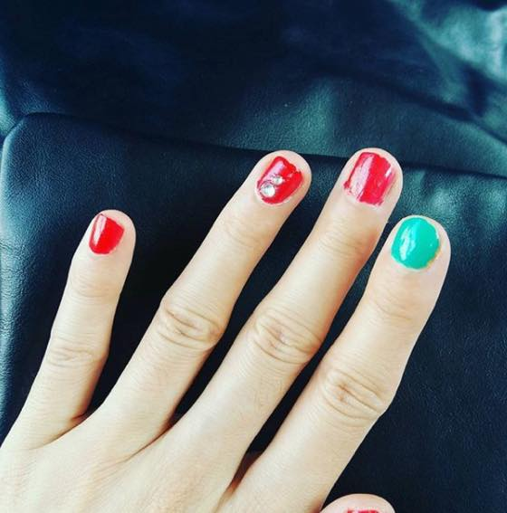

사진은 내가 한 어설픈 네일 ㅋㅋㅋㅋㅋㅋㅋㅋ
손톱을 굉장히 바짝 자르고 자주 자르기 때문에 네일샵은 거의 안가는 편인데
요즘 관심 폭발입니다 ㅋㅋㅋㅋㅋㅋ
네일아트 받고싶다 → 3~4일 후에 손톱 자르고 싶어서 못견딜텐데 관두자 → 네일아트 받고싶다...의 무한반복중
집에서 색칠공부하니 영 어설프고 만족도가 떨어지길래 인터넷으로 열심히 네일샵을 뒤지던중
동네 새로 오픈한 네일샵에 충동적으로 댕겨왔습니다 :3
한국에서 내가 최고로 좋아하는건 분식집 (떡볶이/순대), 사우나 ㅋㅋㅋㅋㅋㅋ
사우나 마치고 왕 충동적으로 들어간거라 시간은 이미 저녁9시;; 좀있음 문닫을 시간이길래 이날은 기본 케어만 받기로 했더랬죠
새건물 & 새로오픈한 곳이라 내부 깔끔하고 분위기 쾌적할거 같았는데
결론부터 말하면 다신 안갈것 같습니다 -_-;;;
제가 덩치와 안어울리게 손이 넘 미니 사이즈인데;;; (쵸딩 5학년 손;;)
케어하는 내내 손이 넘 작아서 힘들다, 어렵다, 큐티클 제거 어렵다 - 란 말을 반복하시더라구욤;;
녜;;; 손이 이모냥이라 죄송합니다
이거야 (자주 가지도 않지만) 네일샵 가면 항상 듣는소리라 넹~그렇군요~ 하고 있었는데
결국 피를 봤습니다 ㅋㅋㅋㅋㅋㅋ 따꼼 했어요
이것도 뭐 아이고 이분 좀 서투르시구나~ 하고 그러려니 했습니다
그때 이미 충동적으로 일 저지르면 그렇지 뭐;; 리서치 제대로 안하고 지르기부터 한 내가 잘못임;; 이러믄서 맘접고 있었고
젤네일과 일반 폴리쉬의 중간(?)인 제품이라 광택이나 지속력도 우수하다고 하시면서 서비스로 탑코트 발라주셨는데
그 광택과 지속력이 우수한 제품이 케어받고 이틀만에 야곰야곰 벗겨졌단 사실........OTL
집근처에 새로 생겼다고 좋아했는데 아쉽더라구욤;;
그리고 6월달에 다녀온 곳이랑 비교해서
왜 유니폼을 입어야하고 유니폼 까진 아니더라도 직원분들의 단정한 옷차림&손관리 가 중요한지
이번에 깨달았습니다 ^^;;
머리도 새로 커트하고 빠마도 하고싶고 이래저래 뷰티에 관심이 가는거 보니
날이 시원해 졌구나 + 아이고 몬생겼어~ 시즌이 돌아온걸 실감하고 있습니다 ^^;;;